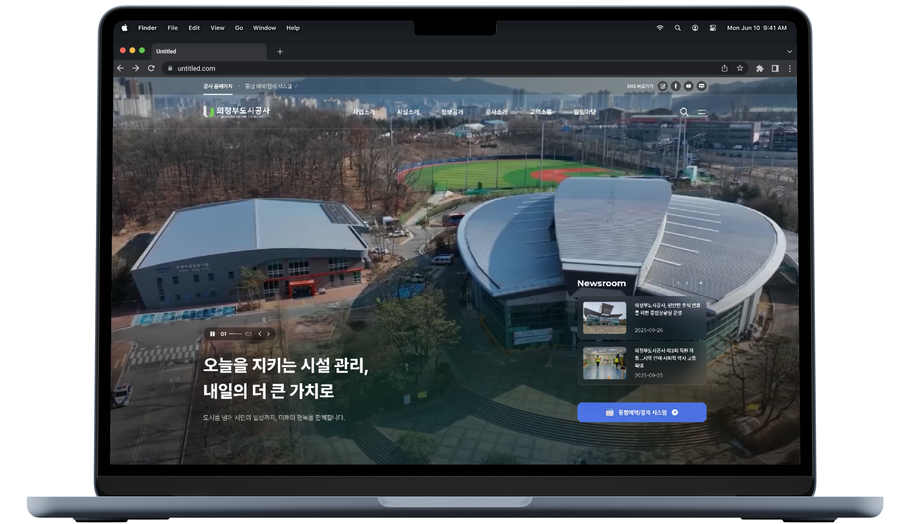

Home
Home Info
Info Contact
Contact
- 개요
- 의정부도시공사 웹 서비스 전면 개편
-
Duration2025.09 - 2025.11
-
Type반응형 웹
-
Role메인 디자이너 (참여율 100%) - 메인 및 서브페이지 UI 디자인, 디자인 시스템 구축, QA 지원
“의정부도시공사”로 새롭게 출범한 변화에 맞추어, 디자인 개선을 통해 시민과 더 가깝게 소통하는 공식 온라인 창구 구축을 목표로 한 프로젝트.
해당 웹사이트 리뉴얼은 단순한 기관 소개를 넘어 공사의 정체성을 명확히 전달하고, 시민이 쉽고 편리하게 이용할 수 있는 디지털 플랫폼을 구현하는 데 초점을 두었다.
Go to site
해당 웹사이트 리뉴얼은 단순한 기관 소개를 넘어 공사의 정체성을 명확히 전달하고, 시민이 쉽고 편리하게 이용할 수 있는 디지털 플랫폼을 구현하는 데 초점을 두었다.
- 인사이트
- 도시 운영의 가치를, 시민이 이해하기 쉬운 형태로
- “관리공단에서 도시공사로 승격/전환 함에 따른 공사로서의 무게감이 있는 아이덴티티 확립하고 싶어요.”
- “여러 레퍼런스를 찾아봤는데, 우리 웹사이트에서도 블루색상과 그레이 색상이 사용되면 좋겠어요.”
- “공사로 요청한지 시간이 꽤 흘렀기 때문에, 빠르게 홈페이지를 재오픈 하고 싶어요.”
고객 요청에 따라 의정부도시공사의 새로운 정체성을 시각적으로 드러내고, 공공기관다운 무게감과 전문성을 표현하는 것으로 디자인 접근 방식을 명확히 했다.
- 결과&활용
- 비주얼 임팩트를 강조한, 스토리텔링형 UX Flow 구축
의정부도시공사의 새로운 정체성을 시각적으로 드러내고자, 메인 섹션에 영상을 적용. 제공받은 영상들에서 전경을 활용하거나, 속도감이 있거나, 시네마틱한 영상들을 재편집해 활용하여 공공기관다운 무게감과 전문성을 표현.
이후 주요 사업&시설 > 비전 > 미디어 순으로 이어지는 체계적인 흐름으로 브랜드 메시지를 효과적으로 전달하고, 홍보 콘텐츠와 소통 채널을 전략적으로 배치하여, 기관의 대외 이미지를 함께 강화하는 데 활용.
이후 주요 사업&시설 > 비전 > 미디어 순으로 이어지는 체계적인 흐름으로 브랜드 메시지를 효과적으로 전달하고, 홍보 콘텐츠와 소통 채널을 전략적으로 배치하여, 기관의 대외 이미지를 함께 강화하는 데 활용.